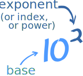

Index Notation and Powers of 10

The exponent (or index or power) of a number says
how many times to use the number in a multiplication.
102 means 10 × 10 = 100
(It says 10 is used 2 times in the multiplication)
Example: 103 = 10 × 10 × 10 = 1,000
- In words: 103 could be called "10 to the third power", "10 to the power 3" or simply "10 cubed"
Example: 104 = 10 × 10 × 10 × 10 = 10,000
- In words: 104 could be called "10 to the fourth power", "10 to the power 4" or "10 to the 4"
You can multiply any number by itself as many times as you want using this notation (see Exponents), but powers of 10 have a special use ...
Powers of 10
"Powers of 10" is a very useful way of writing down large or small numbers.
Instead of having lots of zeros, you show how many powers of 10 will make that many zeros
Example: 5,000 = 5 × 1,000 = 5 × 103
5 thousand is 5 times a thousand. And a thousand is 103. So 5 times 103 = 5,000
Can you see that 103 is a handy way of making 3 zeros?
Scientists and Engineers (who often use very big or very small numbers) like to write numbers this way.
Example: The Mass of the Sun
The Sun has a Mass of 1.988 × 1030 kg.
It is too hard to write 1,988,000,000,000,000,000,000,000,000,000 kg
(And very easy to make a mistake counting the zeros!)
Example: A Light Year (the distance light travels in one year)
It is easier to use 9.461 × 1015 meters, rather than 9,461,000,000,000,000 meters
It is commonly called Scientific Notation, or Standard Form.
Other Way of Writing It
Sometimes people use the ^ symbol (above the 6 on your keyboard), as it is easy to type.
Example: 3 × 10^4 is the same as 3 × 104
- 3 × 10^4 = 3 × 10 × 10 × 10 × 10 = 30,000

Calculators often use "E" or "e" like this:
Example: 6E+5 is the same as 6 × 105
- 6E+5 = 6 × 10 × 10 × 10 × 10 × 10 = 600,000
Example: 3.12E4 is the same as 3.12 × 104
- 3.12E4 = 3.12 × 10 × 10 × 10 × 10 = 31,200
The Trick
While at first it may look hard, there is an easy "trick":
The index of 10 says ...
... how many places to move the decimal point to the right.
Example: What is 1.35 × 104 ?
You can calculate it as: 1.35 x (10 × 10 × 10 × 10) = 1.35 x 10,000 = 13,500
But it is easier to think "move the decimal point 4 places to the right" like this:
| 1.35 | 13.5 | 135. | 1350. | 13500. |
Negative Powers of 10
Negative? What could be the opposite of multiplying? Dividing!
A negative power means how many times to divide by the number.
Example: 5 × 10-3 = 5 ÷ 10 ÷ 10 ÷ 10 = 0.005
Just remember for negative powers of 10:
For negative powers of 10, move the decimal point to the left.
So Negatives just go the other way.
Example: What is 7.1 × 10-3 ?
Well, it is really 7.1 x (1/10 × 1/10 × 1/10) = 7.1 × 0.001 = 0.0071
But it is easier to think "move the decimal point 3 places to the left" like this:
| 7.1 | 0.71 | 0.071 | 0.0071 |
Try It Yourself
Enter a number and see it in Scientific Notation:
Now try to use Scientific Notation yourself:
Summary
The index of 10 says how many places to move the decimal point. Positive means move it to the right, negative means to the left. Example:
| Number | In Scientific Notation |
In Words | |
| Positive Powers | 5,000 | 5 × 103 | 5 Thousand |
| Negative Powers | 0.005 | 5 × 10-3 | 5 Thousandths |